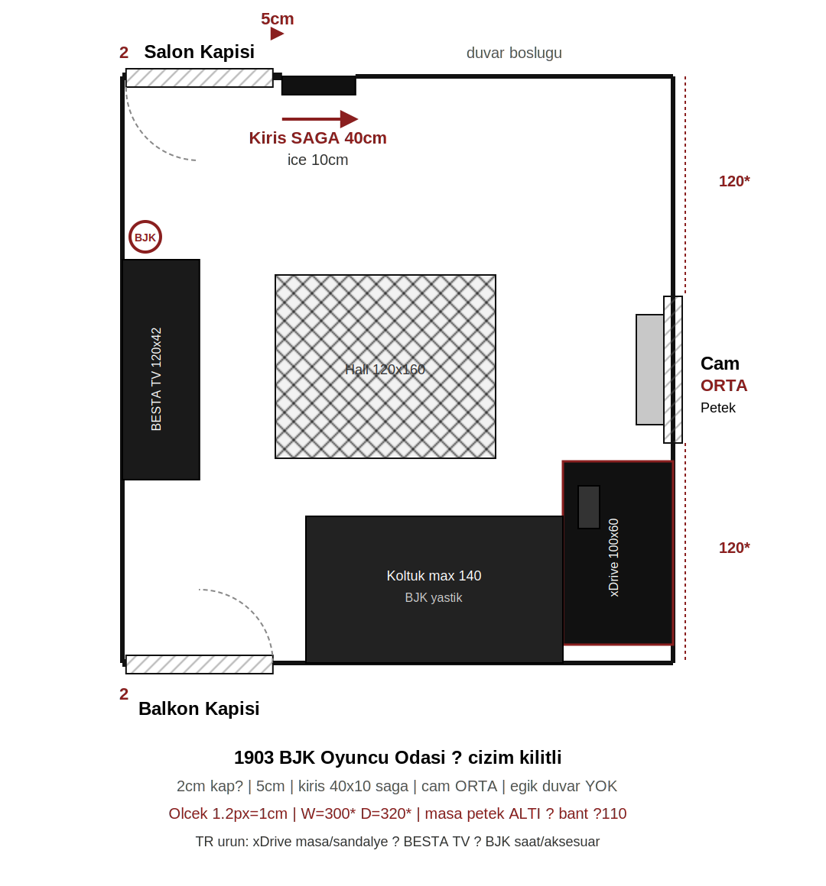
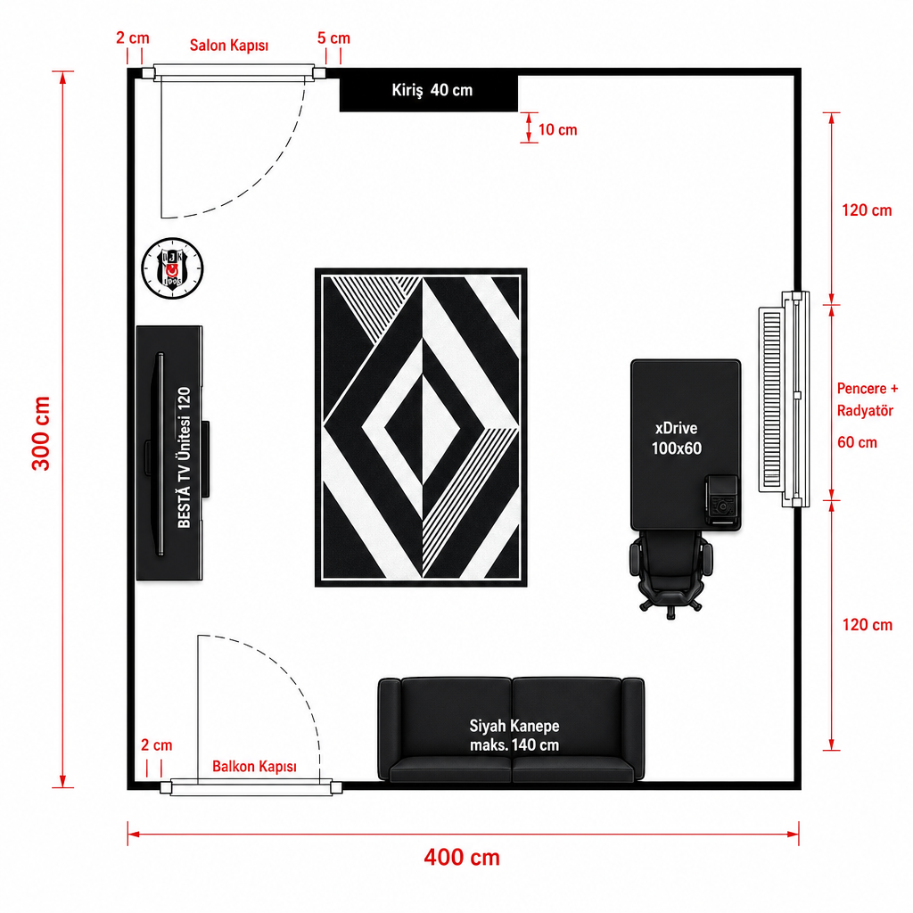
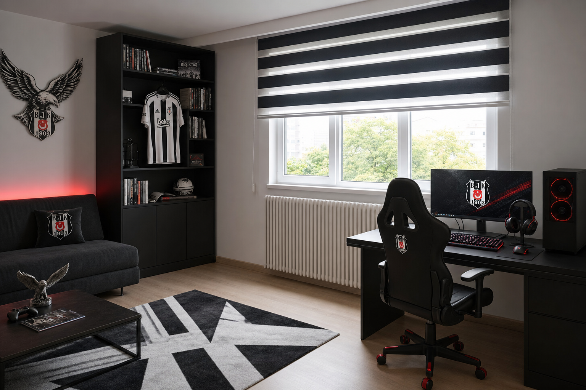
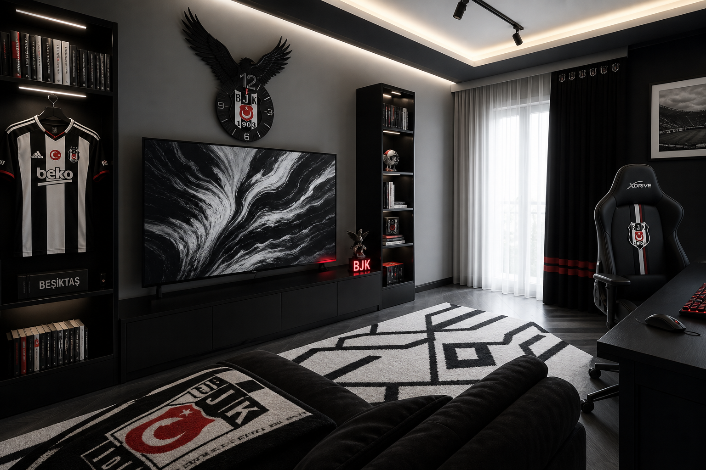
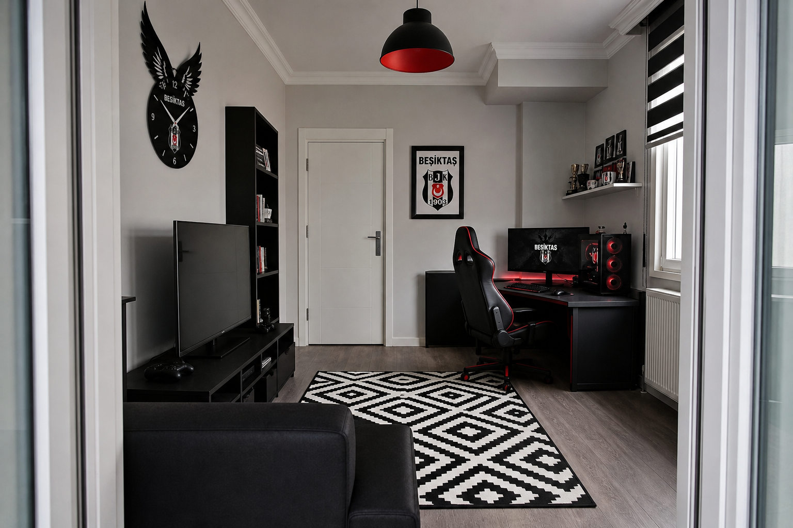
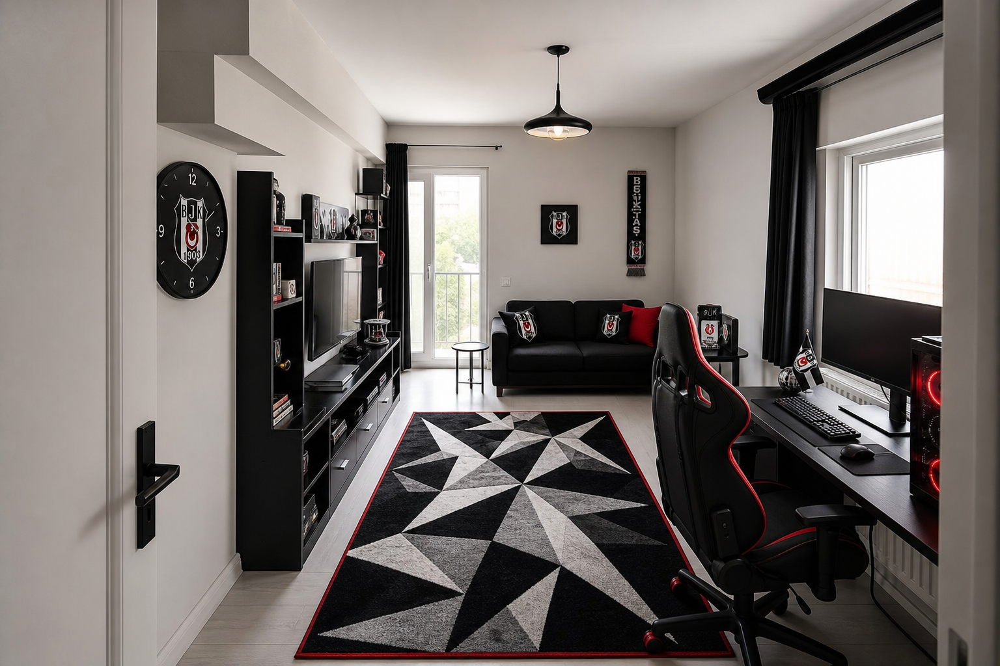
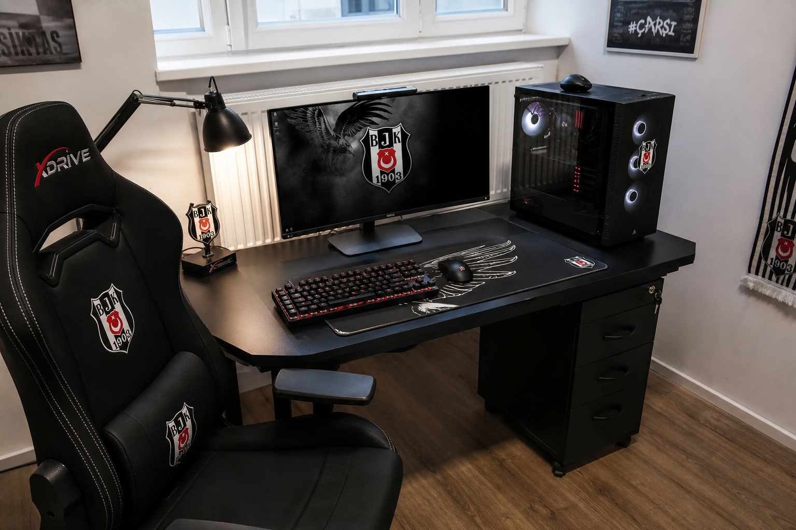
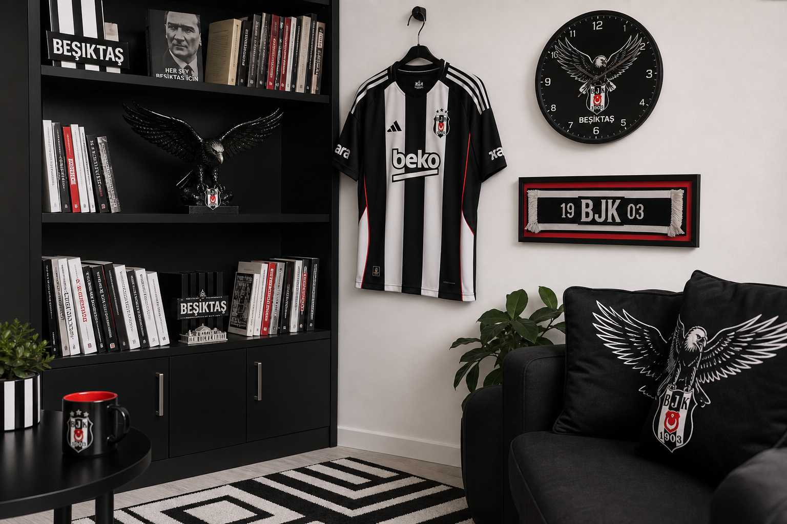

2 + kapı + 5 + 40 + boş = W
Örnek W=300, kapı*=80 → boş = 300−2−80−5−40 = 173 cm.
Beşiktaş · oyuncu masası · TR satış ürünleri
Çizim cm’leri kilitli. Masa, sandalye, PC, koltuk, TV, kitaplık, halı, saat ve BJK aksesuar — Türkiye’de satılan ürünlerle.
Kayma yok: 2 cm → salon → 5 cm → kiriş 40×10 sağa → cam sağda orta. * = yerinde ölç.

Fotolar atmosfer içindir; sipariş ve cm hesabı yukarıdaki plana bağlıdır.







Örnek W=300, kapı*=80 → boş = 300−2−80−5−40 = 173 cm.
D*=320, cam*=80 → bant = 120 cm. xDrive 100×60 buraya (100+10 pay ≤ 120). Derinlik 60 cm odaya girer — petek önü boş kalır.
Masa yalnızca cam/petek altındaki bantta. Bant < 110 cm ise 100’lük alma.
Kapılar sola açılır → üst/alt köşe salınım. TV+kitap ortada; salınımdan uzak.
Linkler Trendyol / IKEA TR / Vivense / Kartal Yuvası. Fiyatlar değişir; stok kontrolü sende.
Sağ duvar, petek/cam altı
Şart: alt bant ≥ 110 cm
Masa önü · siyah/siyah
Sipariş →Masa üstü / yanı · kendi kule veya hazır sistem
Bak →Kod 590.594.61 · Sol orta · TV + kitap/forma
Sipariş →BESTÅ üstü / duvar montaj
Bak →Alt duvar, balkon kapısının sağı
Bak →Oda ortası · kapı salınımına basma
Bak →Sol duvar, TV üstü / yanı
Sipariş →Trendyol lisanslı + Kartal Yuvası
Yastık → Kartal Yuvası →Momento Max/Silan · 4 duvar · kiriş aynı ton
Kartela →